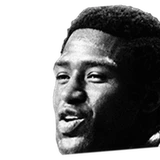

“I see a lot of similarities with [our] championship teams, starting with the coach. [Tom Thibodeau] is a lot like Red Holzman. He holds the guys accountable, and they’re defensive oriented, and the players actually like each other.“I think this is going to be our year. Obviously, health is going to play a big factor into it. But if the Knicks can stay healthy, I think we can get back to our former grandeur.”

What Walt Frazier has said about other NBA players and coaches
8 quotes from Walt Frazier about 10 other people around the NBA, newest first. Each one links to its original source.
Best quotes
“I did a video — I wasn’t able to be at the induction when he was inducted as the captain — I told him, he reminds me a lot of Willis Reed. They’re both lefties, they both have tenacious work ethic, they’re always sharing and caring, and team-first concept. They’re always thinking of the team, not themselves.”
said Frazier, a television analyst for Knicks games on MSG Network.
“He's right there with LeBron [James], probably will surpass LeBron as the best player in the game soon. But for him doing that, I still don't give him the full credit that he probably would have deserved if he stayed with [the Oklahoma City Thunder] and won a title with that team.”
Quotes per season
Walt Frazier talks most about
 Carmelo Anthony1 quote
Carmelo Anthony1 quote- Jackie Robinson1 quote
 Kevin Durant1 quote
Kevin Durant1 quote LeBron James1 quote
LeBron James1 quote Luka Doncic1 quote
Luka Doncic1 quote- Martin Luther King1 quote
 Pat Riley1 quote
Pat Riley1 quote- Red Holzman1 quote
, CC BY-SA 2.0, via Wikimedia Commons") Tom Thibodeau1 quote
Tom Thibodeau1 quote
Willis Reed1 quote
2025-26
1 quote“Pat Riley and me entered the league the same year, he tried to guard me and that’s how he ended up as a coach”
2024-25
2 quotes“I did a video — I wasn’t able to be at the induction when he was inducted as the captain — I told him, he reminds me a lot of Willis Reed. They’re both lefties, they both have tenacious work ethic, they’re always sharing and caring, and team-first concept. They’re always thinking of the team, not themselves.”
“I see a lot of similarities with [our] championship teams, starting with the coach. [Tom Thibodeau] is a lot like Red Holzman. He holds the guys accountable, and they’re defensive oriented, and the players actually like each other.“I think this is going to be our year. Obviously, health is going to play a big factor into it. But if the Knicks can stay healthy, I think we can get back to our former grandeur.”
2023-24
1 quoteTommy Beer:Fantastic, poignant quote just now from Clyde Frazier on MLK:
“I think Jackie Robinson put us on the field, but Martin Luther King put us behind the mic, put us in the front office. Made other people look at us from a different perspective.”
2021-22
1 quoteTommy Beer:Clyde Frazier on Luka Doncic:
“He’s one of the biggest crybabies in the league. Look at him, he’s always crying.”
2018-19
2 quotessaid Frazier, a television analyst for Knicks games on MSG Network.
“He's right there with LeBron [James], probably will surpass LeBron as the best player in the game soon. But for him doing that, I still don't give him the full credit that he probably would have deserved if he stayed with [the Oklahoma City Thunder] and won a title with that team.”
New York Knicks legend Clyde Frazier said Wednesday on Sirius XM NBA Radio that he'd give Kevin Durant an asterisk on a list of all-time great players because of his success with the Golden State Warriors.
“Durant, I mean, as great a player as he is, I would still hold back because, man, he joined a team that really didn't need him. You know what I mean?”
2010-11
1 quote“Team chemistry is that important. I think it's very crucial that Carmelo is aware of that. Amar'e has been here and rejuvenated that franchise. He's coming in here to keep things going and be a part of it.”